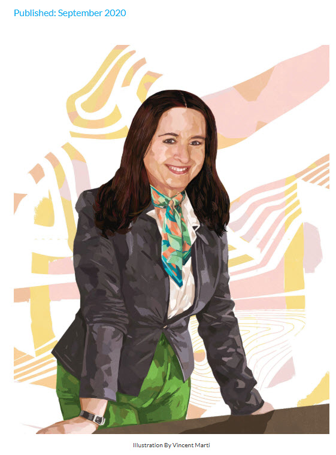
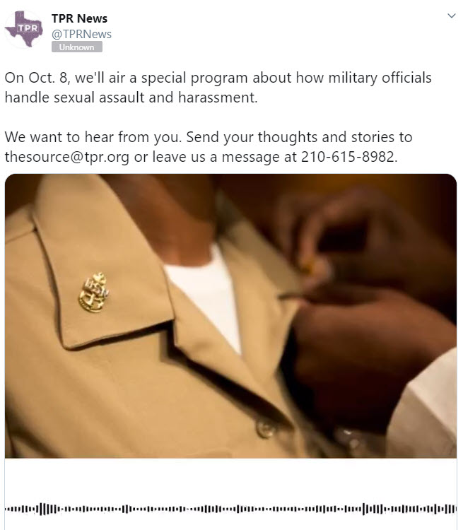

Print & Magazine
San Antonio magazine · September 2020

San Antonio magazine, September 2020 — illustration by Vincent Marti
San Antonio Express-News · August 2021
"Effort against domestic violence is massive, but is it enough?"
San Antonio Express-News · November 2020
"On Election Day, be patient, wear a mask and stay in line no matter how long it takes to vote"
San Antonio Express-News · October 2020
"Bexar County doesn't have a poll wait-time tracker, so San Antonio voters made their own"
San Antonio Express-News · April 2020
"Patrick put no value on grandparents raising grandchildren"
San Antonio Express-News · July 2019
"National and city leaders come together to fight domestic violence"
The Washington Post · November 2017
"Five Myths about Women Veterans"
Routledge · 2018
Investigative Reporting: From Premise to Publication, 2nd Edition
Television
KENS-5 · October 2020
"New Facebook group gives Bexar County voters shortest wait times"
KENS-5 · October 2020
"Voters use Facebook to crowdsource wait times at polling locations"
Telemundo San Antonio · October 2020
"¿Quieres saber los tiempos de espera en centros de votación temprana?"
KSAT-12 · January 2021
"Take this survey on domestic violence, help community get funding for change"
News4SA · April 2019
"Hidden warriors: Homeless veteran women in San Antonio"
Radio & Podcast
Texas Public Radio · October 2020
The American Homefront Project — Panelist on military sexual trauma and female veteran homelessness

Texas Public Radio — October 2020
VIA · September 2020
"Equity and Transit" — VIA Tele-Town Hall
CBS Radio · June 2017
"Women Veterans and Homelessness after Military Service"
Vermont Public Radio · March 2014
"Transitioning from the Battlefield to the Classroom"
BlogTalkRadio · September 2013
"Averting Suicide with a Helping Hand: Learn How You Can Help"